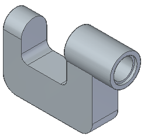
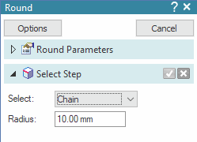
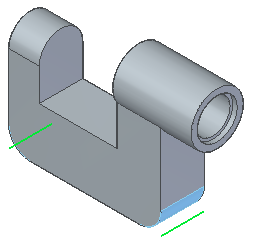
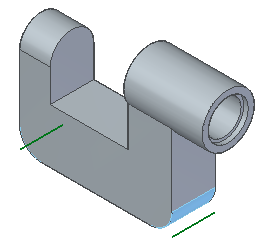
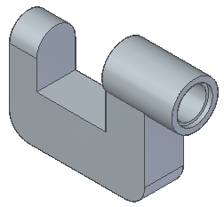
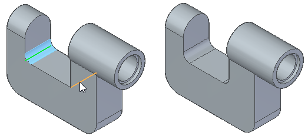

Round more edges

In the next few steps, use the Round command to round several edges on the part.
1: Select the edges to round
The Round command should still be active
On the command bar, in the Radius field, type 10.

Select the edges shown.

Right-click to finish rounding edges.

Click Preview, and then click Finish.

Add a 5 mm round to the two edges shown.

Press Esc to dismiss the Round command.